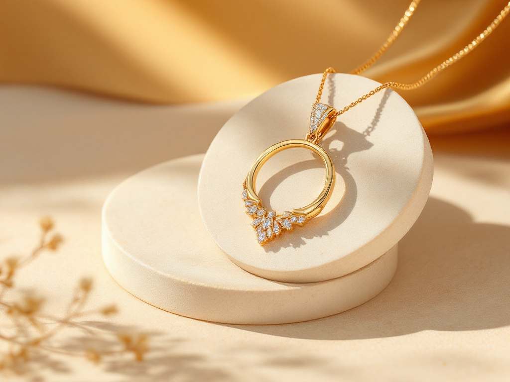

Nouvelle collection — Hiver
Fleurs de givre
La radiance de l'hiver, façonnée à la main à Paris.
DécouvrirNouvelle collection — Hiver
La radiance de l'hiver, façonnée à la main à Paris.
DécouvrirExplorez nos univers

Fiançailles
Solitaires, trilogies, halos : trouvez la bague qui dira oui à votre histoire.
Découvrir
Joaillerie
Des pièces lumineuses à porter tous les jours, en or éthique et diamants certifiés.
DécouvrirCollections
Notre histoire
Nos engagements
Or recyclé 18 ct, diamants GIA/HRD respectant le processus de Kimberley, poinçon de garantie sur chaque pièce.
Chaque bijou est façonné à la main dans notre atelier parisien, en circuits courts, par des artisans d'exception.
Nettoyage et polissage offerts à vie, mise à taille offerte sous 30 jours, réparations certifiées par nos artisans.
Le Carnet

Guide des pierres
Saphir, émeraude, rubis… chaque pierre a un tempérament.
Lire l'article
Coulisses
De la première esquisse au sceau de l'atelier, le processus de création.
Lire l'article
Savoir-faire
Nos conseils d'entretien et notre service après-vente dédié.
Lire l'articleGaranties
Certificats, réparations certifiées et service après-vente de la Maison.
Lire l'article